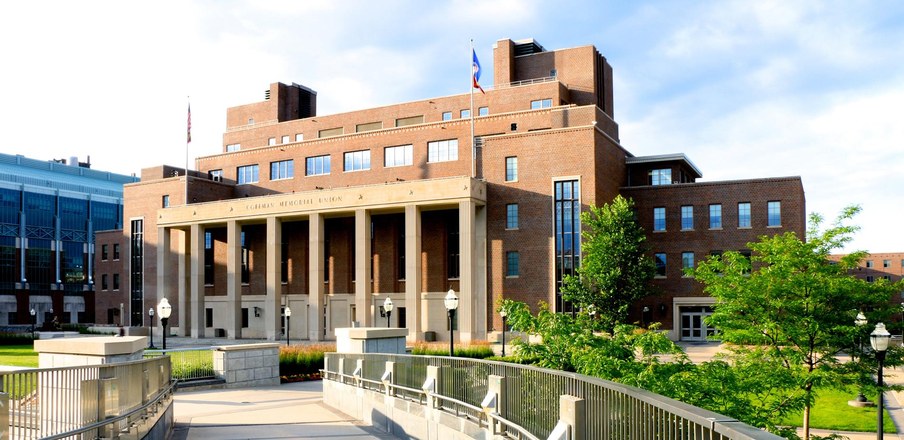
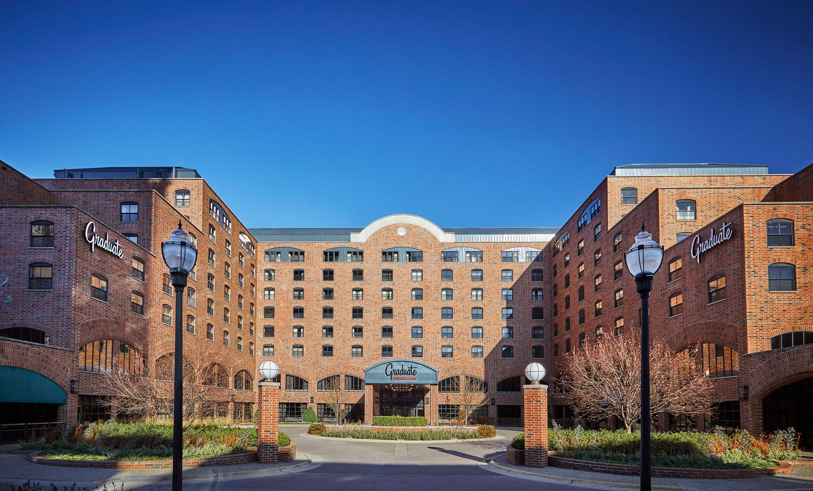
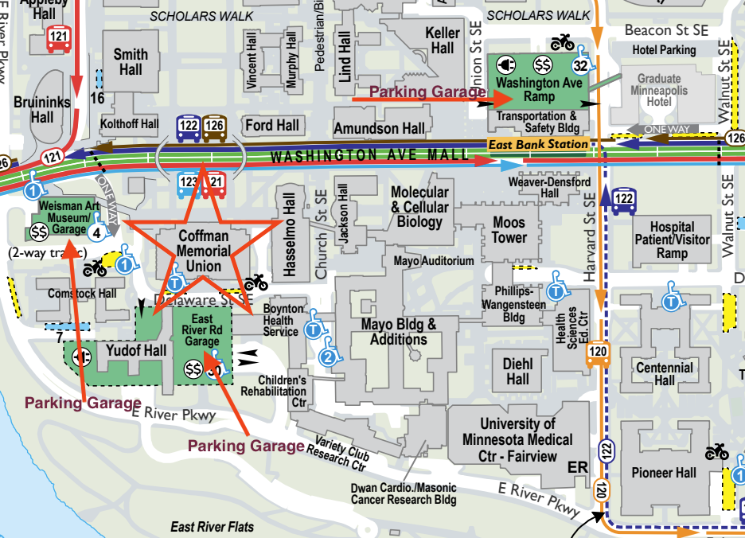
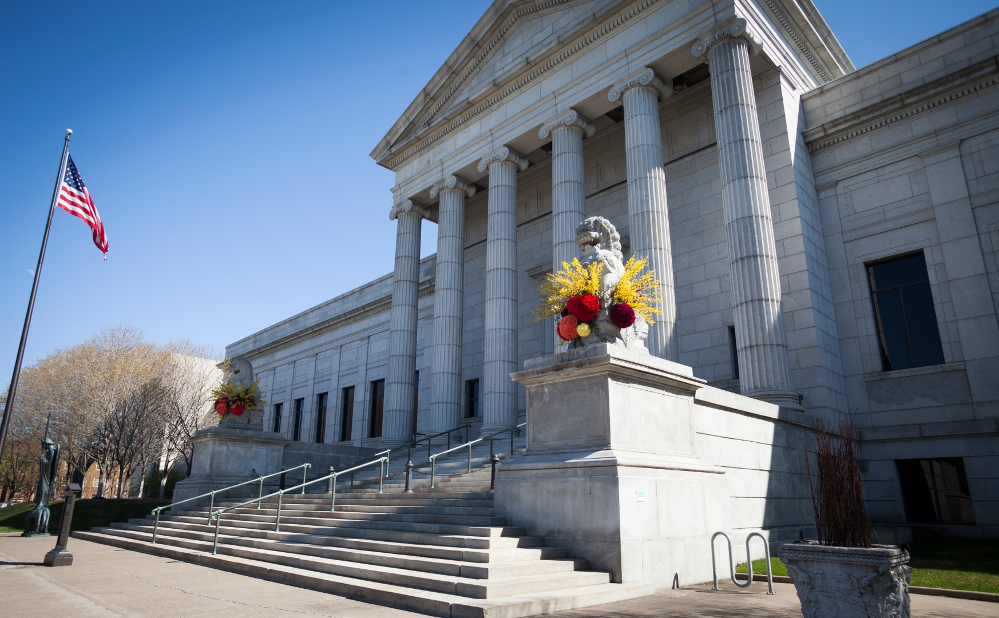
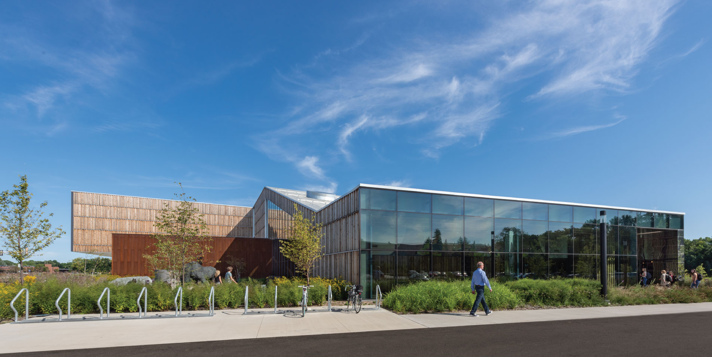
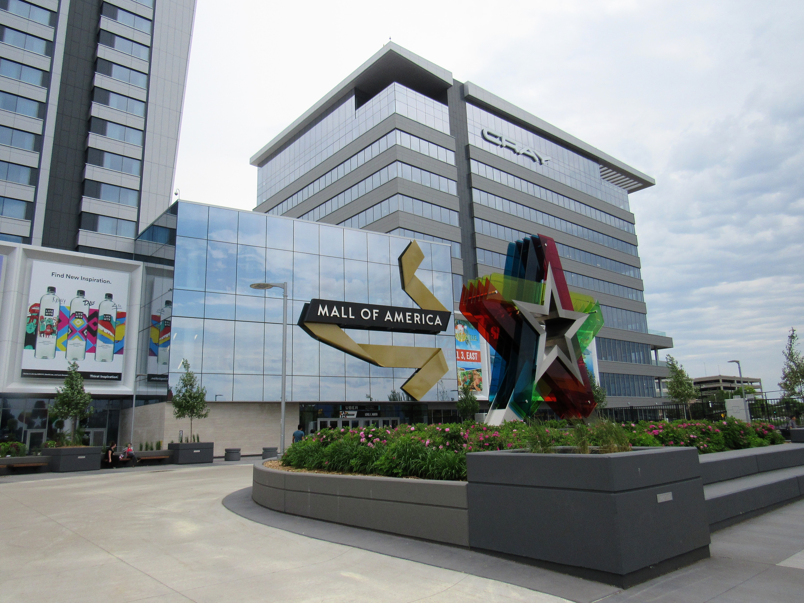
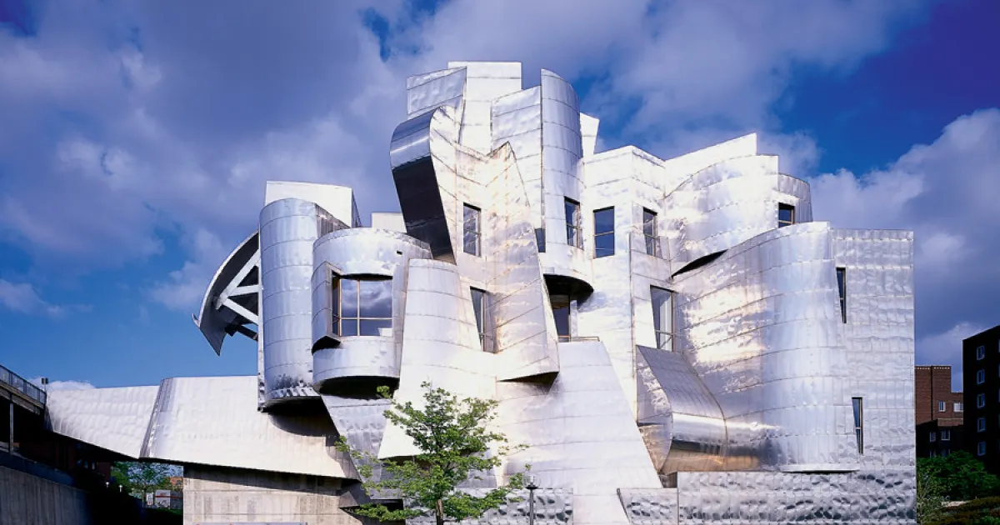
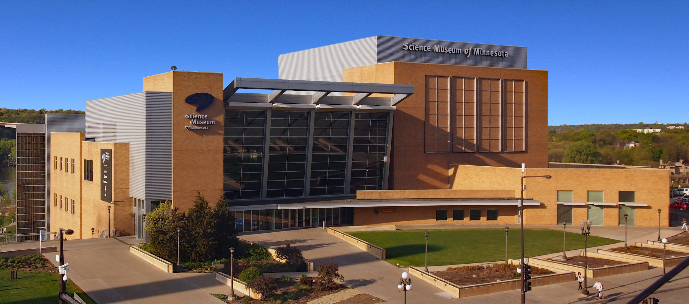
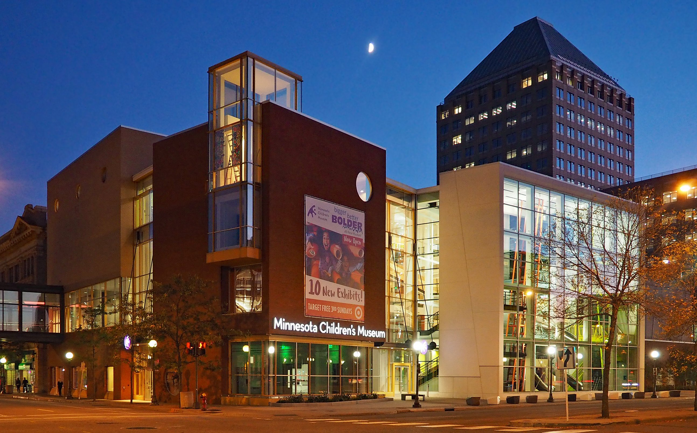

Washington Ave Ramp Parking
501 Washington Ave SE, Minneapolis, MN 55455
View parking detailsExplore the city of Minneapolis, MN — the home of ICHI 2026
The IEEE ICHI 2026 will be held in Minneapolis, Minnesota.
Conference Venue:

Graduate by Hilton Minneapolis
615 Washington Ave SE, Minneapolis, MN 55414

Courtyard Minneapolis Downtown
1500 Washington Ave South Minneapolis, MN 55454

Additional hotel options are available throughout downtown Minneapolis and in the surrounding areas within a short distance of the conference venue.
Parking is available near Coffman Memorial Union. The map below highlights three convenient parking garages around the conference venue.

501 Washington Ave SE, Minneapolis, MN 55455
View parking details385 East River Parkway, Minneapolis, MN 55455
View parking details333 East River Parkway, Minneapolis, MN 55455
View parking detailsPlease check the linked University of Minnesota Parking and Transportation Services pages for current rates, access hours, and availability before arrival.
Minneapolis–Saint Paul International Airport (MSP) is located approximately 10 miles from the University of Minnesota Twin Cities campus. The drive typically takes about 20 minutes, depending on traffic conditions. Public transportation is also convenient and reliable. Visitors can take the METRO Blue Line light rail from the airport to downtown Minneapolis. From there, the METRO Green Line provides direct service to the University of Minnesota campus, with stops at East Bank and Stadium Village, both within walking distance of the conference venues.
Downtown Minneapolis sits just across the Mississippi River from campus. It is approximately 5–10 minutes away by car or light rail. The Green Line provides a direct connection between the University district and downtown, making it easy for visitors to explore without needing a car. Rideshare services such as Uber and Lyft are readily available, and parking ramps are located near Coffman Memorial Union for those who prefer to drive.
Minneapolis is known for its welcoming atmosphere and vibrant food scene. Popular and highly rated restaurants include Spoon and Stable, Martina, Young Joni, Manny’s Steakhouse, and Owamni, the James Beard Award-winning Indigenous restaurant led by Chef Sean Sherman.
The city offers a balance of urban energy and natural beauty, with 22 lakes within city limits, more than 180 parks, and miles of scenic walking and biking trails. Visitors may enjoy exploring:
Iconic Minneapolis Landmarks:
Arts, Culture, and Museums:








Minneapolis also has a strong healthcare and research presence, supported by leading hospitals, medical technology companies, and the University of Minnesota’s nationally recognized research programs.